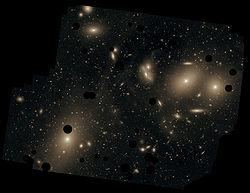
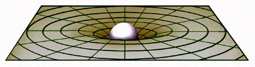
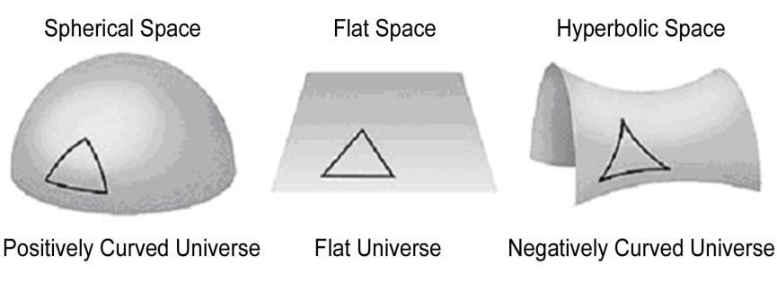

FIGURE 2.16: Cluster Virgo

চিত্র 2_16 / Figure 2_16
চিত্র 2.16: ক্লাস্টার কন্যা
চিত্র 2_16 / Figure 2_16
The Virgo spans about one hundred and ten million light years and contains about 1300 to 2000 galaxies. 1g(3). Supercluster
কন্যা রাশি প্রায় একশ দশ মিলিয়ন আলোকবর্ষ বিস্তৃত এবং এতে প্রায় 1300 থেকে 2000টি ছায়াপথ রয়েছে। 1g(3)। সুপারক্লাস্টার
The groups, clusters, and additional isolated galaxies together form a supercluster. There are about ten million superclusters in the observable universe. A few superclusters are: Hydra-Centaurus supercluster, Coma- Virgo supercluster, etc. The Local Group belongs to Coma-Virgo supercluster.
গোষ্ঠী, ক্লাস্টার এবং অতিরিক্ত বিচ্ছিন্ন ছায়াপথ একসাথে একটি সুপারক্লাস্টার গঠন করে। পর্যবেক্ষণযোগ্য মহাবিশ্বে প্রায় দশ মিলিয়ন সুপারক্লাস্টার রয়েছে। কয়েকটি সুপারক্লাস্টার হল: হাইড্রা-সেন্টোরাস সুপারক্লাস্টার, কোমা-ভিরগো সুপারক্লাস্টার, ইত্যাদি। স্থানীয় গ্রুপটি কোমা-ভারগো সুপারক্লাস্টারের অন্তর্গত।
1g(4). Wall and Filament
1g(4)। প্রাচীর এবং ফিলামেন্ট
There are further types of concentration such as ―walls‖ and ―filaments‖ discussed in this Section later.
এই বিভাগে পরে আলোচনা করা হয়েছে "দেয়াল" এবং "ফিলামেন্টস" এর মতো ঘনত্বের আরও প্রকার।
1h. Summary of Part 1
1ঘ. পার্ট 1 এর সারাংশ
The universe is full of galaxies with vast tracts of empty space between them. There are many stars, free dust and gas inside a galaxy. Our solar system lies in a galaxy called Milky Way Galaxy. The galaxies show a distinct tendency to be collected into group, cluster, supercluster, etc. The universe is unimaginably huge.
মহাবিশ্ব গ্যালাক্সিতে পূর্ণ এবং তাদের মধ্যে ফাঁকা স্থানের বিশাল ট্র্যাক্ট রয়েছে। একটি গ্যালাক্সির ভিতরে অনেক তারা, মুক্ত ধুলো এবং গ্যাস রয়েছে। আমাদের সৌরজগৎ মিল্কিওয়ে গ্যালাক্সি নামে একটি গ্যালাক্সিতে অবস্থিত। গ্যালাক্সিগুলো গ্রুপ, ক্লাস্টার, সুপারক্লাস্টার ইত্যাদিতে একত্রিত হওয়ার একটি স্বতন্ত্র প্রবণতা দেখায়। মহাবিশ্ব কল্পনাতীতভাবে বিশাল।
Part 2: Large Scale Structure of the Universe - Science
পার্ট 2: মহাবিশ্বের বড় মাপের কাঠামো - বিজ্ঞান
When a metal ball depresses a soft rubber sheet, the smaller objects at close proximity tend to roll down toward the ball. Similarly, the presence of matter curves the space.
যখন একটি ধাতব বল একটি নরম রাবার শীটকে বিষণ্ণ করে, তখন কাছাকাছি থাকা ছোট বস্তুগুলি বলের দিকে গড়িয়ে পড়তে থাকে। একইভাবে, পদার্থের উপস্থিতি স্থানকে বক্র করে।
FIGURE 2.17: Curvature of space in two dimensional view

চিত্র 2_17 / Figure 2_17
চিত্র 2.17: দ্বিমাত্রিক দৃশ্যে স্থানের বক্রতা
চিত্র 2_17 / Figure 2_17
If the space were two-dimensional, the curvature would look like the curvature of the picture. It is difficult to draw a three-dimensional sketch of the same curvature. However, it can be visualized with difficulties. Einstein proposed time as the fourth dimension. The proposition has been substantially proved. If the space were three-dimensional, the Moon would fall into the Earth directly, but it does not fall because of Time. In four-dimensional space-time, the Moon is coming straight to the Earth; but in three-dimensional view, we see it rotating around the Earth (in the process of rotation, the Moon is closing to the Earth, but the rate is insignificant). The curvature of space-time has been proved by experiments that the light passing through the side of a massive object (like the sun) bends. Thus, Einstein explained gravity as the tendency of matter to move along the curved space-time. In his view, gravity is not a force like other forces; it is felt due to the curvature of space-time. ―The General theory extends relativity to gravitational fields. Einstein concluded that the presence of matter distorts space and time, space-time must be regarded together as curved.‖– To the Edge of Eternity by John Gribbin in The Encyclopedia of Space Travel and Astronomy edited by John Man. The space-time is a dynamic entity. If a shell is fired in the direction a tank is moving, the speed of the tank gets added to the velocity of the shell. But, if a person is driving a car putting the headlights on, the speed of the car does not get added to the speed of light, because the speed of light is the ultimate speed. If the speed of light cannot increase, then to the driver of the car, the speed of light should be less by the amount of the speed of the car. But, it too does not happen; the speed of light remains constant to the driver of the car as well. How it happens? It happens because motion slows down the time: As the driver of the car is moving, his watch is running slowly. Thereby, the speed of light remains constant to the driver as well. Motion not only makes the watches move slowly, all actions and reactions become slow. If a chemical reaction takes one minute at rest, it will take longer time in a moving space ship—but in the watches of the space ship it will be one minute because, the watches in the space ship are running slowly. A man in motion will age slower than a man in rest. However, the effects are insignificant in our day-to-day speeds. The phenomenon is practically proved: The atomic watches of GPS satellites, orbiting Earth, need corrections for accurate navigational fix. Special Relativity predicts that the on-board atomic clocks on the satellites should fall behind the clocks on the ground by about 7 microseconds per day because of the slower ticking rate due to the time dilation effect of their relative motion. Actually, motion compact the space. In compact space, everything moves slowly. The presence of matter too makes the space compact. On the surface of the Earth, time moves slower than on the top of a mountain because, the space is more compact on the surface of the Earth (amount of slowing down is so less that it is not detectable by the normal clock). The space around a black hole is extremely compact, so time is extremely slow over there. The GPS satellites are in the orbits high above the Earth where the curvature of space-time due to the Earth's mass is less than it is at the Earth's surface. A calculation using General Relativity predicts that the clocks in each GPS satellite should get ahead of ground-based clocks by 45 microseconds per day. The combination of these two effects means that the on-board clocks of GPS Satellites should tick faster than identical clocks on the ground by about 38 microseconds per day (45-7=38). This sounds small, but the high precision required of the GPS system requires nanosecond accuracy, and 38 microseconds is 38,000 nanoseconds. If these effects were not properly taken into account, a navigational fix based on the GPS constellation would be false after only 2 minutes, and errors in global positions would continue to accumulate at a rate of about 10 kilometers each day! The whole system would be utterly worthless for navigation in a very short time. So, the presence of matter curves space-time. Free moving objects follow the curvature (a free-falling meteorite cannot hit the Earth vertically; it has to follow a curved path to hit the Earth). The tendency of matter to move along the curved space-time is felt by us as gravity. How the space of the overall universe is curved? The advent of great telescopes has extended our horizon far beyond our imagination. But, so far a boundary could not be distinguished beyond which there be no galaxy. The farther cosmologists are able to observe, the more galaxies are discovered. The end of the universe could not be discovered in any direction. Moreover, no reliable way could be found out so far to measure the distance of a galaxy. Therefore, it is not possible to draw the exact structure of the universe. Scientists predict the Large Scale Structure of the Universe by assuming that the universe is uniform and isotropic. Uniform universe means that the matter is homogeneously distributed throughout the space when averaged over a very large distance—two equally large parts of the universe contain the same number of galaxies. Isotropic universe means that no direction of observation should seem different from any other direction. The hypothesis that the universe is uniform and isotropic is known as the Cosmological Principle. A star makes a curvature in the space-time. All the stars in a galaxy as a whole make a curvature for the galaxy. All the galaxies in a cluster as a whole make a curvature for the cluster. In this way, the overall curvature of a uniform and isotropic universe may be positive, negative, or flat. FIGURE 2.18: Curvature of Overall Universe

চিত্র 2_18 / Figure 2_18
স্থানটি দ্বিমাত্রিক হলে বক্রতাটি ছবির বক্রতার মতো দেখাবে। একই বক্রতার একটি ত্রিমাত্রিক স্কেচ আঁকা কঠিন। যাইহোক, এটা অসুবিধা সঙ্গে কল্পনা করা যেতে পারে. আইনস্টাইন সময়কে চতুর্থ মাত্রা হিসেবে প্রস্তাব করেছিলেন। প্রস্তাবটি যথেষ্ট প্রমাণিত হয়েছে। মহাকাশ ত্রিমাত্রিক হলে চাঁদ সরাসরি পৃথিবীতে পড়ত, কিন্তু সময়ের কারণে পড়ে না। চতুর্মাত্রিক স্থান-কালের মধ্যে, চাঁদ সরাসরি পৃথিবীতে আসছে; কিন্তু ত্রিমাত্রিক দৃশ্যে, আমরা এটিকে পৃথিবীর চারপাশে ঘূর্ণায়মান দেখতে পাই (ঘূর্ণনের প্রক্রিয়ায়, চাঁদ পৃথিবীর কাছে আসছে, কিন্তু হার নগণ্য)। স্থান-কালের বক্রতা পরীক্ষা দ্বারা প্রমাণিত হয়েছে যে একটি বিশাল বস্তুর (সূর্যের মতো) পাশ দিয়ে যাওয়া আলো বেঁকে যায়। এইভাবে, আইনস্টাইন মাধ্যাকর্ষণকে ব্যাখ্যা করেছিলেন বাঁকা স্থান-কাল বরাবর চলার জন্য পদার্থের প্রবণতা হিসাবে। তার দৃষ্টিতে, মাধ্যাকর্ষণ অন্যান্য শক্তির মতো একটি শক্তি নয়; এটি স্থান-কালের বক্রতার কারণে অনুভূত হয়। - সাধারণ তত্ত্ব মহাকর্ষীয় ক্ষেত্রের আপেক্ষিকতাকে প্রসারিত করে। আইনস্টাইন উপসংহারে পৌঁছেছিলেন যে পদার্থের উপস্থিতি স্থান এবং সময়কে বিকৃত করে, স্থান-কালকে একসাথে বাঁকা হিসাবে বিবেচনা করা উচিত।‖- জন গ্রিবিন দ্য এনসাইক্লোপিডিয়া অফ স্পেস ট্র্যাভেল অ্যান্ড অ্যাস্ট্রোনমিতে জন ম্যান দ্বারা সম্পাদিত টু দ্য এজ অফ ইটারনিটি। স্থান-কাল একটি গতিশীল সত্তা। একটি ট্যাঙ্ক যে দিকে চলছে সেদিকে শেল নিক্ষেপ করা হলে, ট্যাঙ্কের গতি শেলের বেগের সাথে যুক্ত হয়। কিন্তু, যদি একজন ব্যক্তি হেডলাইট জ্বালিয়ে গাড়ি চালায়, তাহলে গাড়ির গতি আলোর গতির সাথে যোগ হয় না, কারণ আলোর গতিই চূড়ান্ত গতি। যদি আলোর গতি বাড়তে না পারে, তাহলে গাড়ির চালকের কাছে আলোর গতি গাড়ির গতির পরিমাণের তুলনায় কম হওয়া উচিত। কিন্তু, তাও হয় না; আলোর গতি গাড়ির চালকের কাছেও স্থির থাকে। এটা কিভাবে হয়? এটি ঘটছে কারণ গতি সময়কে ধীর করে দেয়: গাড়ির চালক যেমন চলছে, তার ঘড়ি ধীরে চলছে। এর ফলে চালকের কাছেও আলোর গতি স্থির থাকে। মোশন শুধু ঘড়িগুলোকে ধীরে ধীরে চলাফেরা করে না, সমস্ত ক্রিয়া ও প্রতিক্রিয়া ধীর হয়ে যায়। যদি রাসায়নিক বিক্রিয়ায় এক মিনিট বিশ্রাম নেয়, তবে চলমান মহাকাশ জাহাজে এটি আরও বেশি সময় নেবে-কিন্তু মহাকাশ জাহাজের ঘড়িতে এটি এক মিনিট হবে কারণ, মহাকাশ জাহাজের ঘড়িগুলি ধীরে ধীরে চলছে। বিশ্রামে থাকা একজন মানুষের তুলনায় গতিশীল একজন মানুষের বয়স কম হবে। যাইহোক, প্রভাবগুলি আমাদের প্রতিদিনের গতিতে নগণ্য। ঘটনাটি কার্যত প্রমাণিত: GPS স্যাটেলাইটের পারমাণবিক ঘড়ি, পৃথিবীকে প্রদক্ষিণ করে, সঠিক ন্যাভিগেশনাল ফিক্সের জন্য সংশোধন প্রয়োজন। স্পেশাল রিলেটিভিটি ভবিষ্যদ্বাণী করে যে স্যাটেলাইটের অন-বোর্ড পারমাণবিক ঘড়িগুলি প্রতিদিন প্রায় 7 মাইক্রোসেকেন্ডে মাটির ঘড়ির পিছনে পড়বে কারণ তাদের আপেক্ষিক গতির সময় প্রসারণের প্রভাবের কারণে ধীর টিকিং রেট। আসলে, গতি স্থান কম্প্যাক্ট. কমপ্যাক্ট স্পেসে, সবকিছু ধীরে ধীরে চলে। পদার্থের উপস্থিতিও স্থানটিকে কম্প্যাক্ট করে তোলে। পৃথিবীর পৃষ্ঠে, সময় একটি পর্বতের চূড়ার তুলনায় ধীর গতিতে চলে কারণ, পৃথিবীর পৃষ্ঠে স্থানটি আরও কমপ্যাক্ট (ধীরগতির পরিমাণ এত কম যে এটি স্বাভাবিক ঘড়ি দ্বারা সনাক্ত করা যায় না)। একটি ব্ল্যাক হোলের চারপাশের স্থানটি অত্যন্ত কম্প্যাক্ট, তাই সেখানে সময় অত্যন্ত ধীর। জিপিএস স্যাটেলাইটগুলি পৃথিবীর উপরে কক্ষপথে রয়েছে যেখানে পৃথিবীর ভরের কারণে স্থান-কালের বক্রতা পৃথিবীর পৃষ্ঠের তুলনায় কম। সাধারণ আপেক্ষিকতা ব্যবহার করে একটি গণনা ভবিষ্যদ্বাণী করে যে প্রতিটি জিপিএস স্যাটেলাইটের ঘড়িগুলি গ্রাউন্ড-ভিত্তিক ঘড়ির থেকে প্রতিদিন 45 মাইক্রোসেকেন্ড এগিয়ে থাকা উচিত। এই দুটি প্রভাবের সংমিশ্রণের অর্থ হল যে জিপিএস স্যাটেলাইটের অন-বোর্ড ঘড়িগুলি মাটিতে থাকা অভিন্ন ঘড়ির চেয়ে দিনে প্রায় 38 মাইক্রোসেকেন্ড (45-7=38) দ্রুত টিক টিক করবে। এটি ছোট শোনাচ্ছে, কিন্তু GPS সিস্টেমের প্রয়োজনীয় উচ্চ নির্ভুলতার জন্য ন্যানোসেকেন্ড নির্ভুলতা প্রয়োজন এবং 38 মাইক্রোসেকেন্ড হল 38,000 ন্যানোসেকেন্ড। যদি এই প্রভাবগুলি সঠিকভাবে বিবেচনা না করা হয়, GPS নক্ষত্রমণ্ডলের উপর ভিত্তি করে একটি নেভিগেশনাল ফিক্স মাত্র 2 মিনিটের পরে মিথ্যা হয়ে যাবে এবং বিশ্বব্যাপী অবস্থানে ত্রুটিগুলি প্রতিদিন প্রায় 10 কিলোমিটার হারে জমা হতে থাকবে! পুরো সিস্টেমটি খুব অল্প সময়ের মধ্যে নেভিগেশনের জন্য একেবারে অকেজো হয়ে যাবে। সুতরাং, পদার্থের উপস্থিতি স্থান-কালকে বক্ররেখা করে। মুক্ত চলমান বস্তুগুলি বক্রতা অনুসরণ করে (একটি মুক্ত-পতনকারী উল্কা পৃথিবীতে উল্লম্বভাবে আঘাত করতে পারে না; এটিকে পৃথিবীতে আঘাত করার জন্য একটি বাঁকা পথ অনুসরণ করতে হবে)। বক্র স্থান-কাল বরাবর পদার্থের চলাফেরা করার প্রবণতাকে আমরা অভিকর্ষ বলে অনুভব করি। সামগ্রিক মহাবিশ্বের স্থান কিভাবে বাঁকা হয়? দুর্দান্ত টেলিস্কোপের আবির্ভাব আমাদের কল্পনার বাইরে আমাদের দিগন্তকে প্রসারিত করেছে। কিন্তু, এখন পর্যন্ত এমন একটি সীমানা চিহ্নিত করা যায়নি যার বাইরে কোনো গ্যালাক্সি নেই। মহাজাগতিক বিজ্ঞানীরা যত দূর পর্যবেক্ষণ করতে পারবেন, তত বেশি গ্যালাক্সি আবিষ্কৃত হবে। মহাবিশ্বের শেষ কোন দিকেই আবিষ্কার করা যায়নি। তাছাড়া, গ্যালাক্সির দূরত্ব পরিমাপের কোনো নির্ভরযোগ্য উপায় এখন পর্যন্ত খুঁজে পাওয়া যায়নি। তাই মহাবিশ্বের সঠিক কাঠামো আঁকা সম্ভব নয়। বিজ্ঞানীরা মহাবিশ্বের বৃহৎ স্কেল কাঠামোর পূর্বাভাস দেন যে মহাবিশ্ব অভিন্ন এবং আইসোট্রপিক। ইউনিফর্ম ইউনিভার্স মানে হল যে পদার্থটি মহাকাশ জুড়ে একইভাবে বিতরণ করা হয় যখন একটি খুব বড় দূরত্বের উপর গড় হয় - মহাবিশ্বের দুটি সমান বড় অংশে একই সংখ্যক ছায়াপথ রয়েছে। আইসোট্রপিক মহাবিশ্বের অর্থ হল পর্যবেক্ষণের কোনো দিকই অন্য কোনো দিক থেকে আলাদা বলে মনে হবে না। মহাবিশ্ব অভিন্ন এবং সমস্থানীয় যে অনুমানটি মহাজাগতিক নীতি হিসাবে পরিচিত। একটি তারা স্থান-কালের মধ্যে একটি বক্রতা তৈরি করে। একটি গ্যালাক্সির সমস্ত তারা সামগ্রিকভাবে ছায়াপথের জন্য একটি বক্রতা তৈরি করে। একটি ক্লাস্টারের সমস্ত গ্যালাক্সি সামগ্রিকভাবে ক্লাস্টারের জন্য একটি বক্রতা তৈরি করে। এইভাবে, একটি অভিন্ন এবং আইসোট্রপিক মহাবিশ্বের সামগ্রিক বক্রতা ধনাত্মক, ঋণাত্মক বা সমতল হতে পারে। চিত্র 2.18: সামগ্রিক মহাবিশ্বের বক্রতা
চিত্র 2_18 / Figure 2_18
The space of a Positively Curved Universe is bent round onto itself. The light travelling in an apparently straight line will return to the point of origin—the space is like the surface of the Earth where one moving through a straight line returns to the start point. A Positively Curved Universe is closed; the universe will eventually collapse. If the space is Negatively Curved, it is like the saddle of a horse. Light follows a parabolic path. The Negatively Curved Universe is open; it will expand forever. The space may be flat, where light follows a straight path. The Flat Universe is the dividing line between the Open Universe and the Closed Universe: there is either just enough matter to ‗close‘ the universe and make it eventually collapse, or there is not quite enough so that it will expand forever. Finally, the above predictions depend on the assumption that the universe is uniform and isotropic, which was introduced by some old scientists, including Einstein, to apply gravitational dynamics to the universe as a whole. In reality, the universe may not be uniform, and it may not look the same from all points. Part 3: Large Scale Structure of the Universe - the Quran
একটি ইতিবাচকভাবে বাঁকা মহাবিশ্বের স্থানটি নিজের দিকে বৃত্তাকারভাবে বাঁকানো। আপাতভাবে সরলরেখায় ভ্রমণ করা আলো মূল বিন্দুতে ফিরে আসবে- মহাকাশটি পৃথিবীর পৃষ্ঠের মতো যেখানে একটি সরল রেখার মধ্য দিয়ে চলা শুরু বিন্দুতে ফিরে আসে। একটি ইতিবাচকভাবে বাঁকা মহাবিশ্ব বন্ধ; মহাবিশ্ব শেষ পর্যন্ত ধসে পড়বে। যদি স্থানটি নেতিবাচকভাবে বাঁকা হয় তবে এটি ঘোড়ার জিনের মতো। আলো একটি প্যারাবোলিক পথ অনুসরণ করে। নেতিবাচকভাবে বাঁকা মহাবিশ্ব উন্মুক্ত; এটা চিরতরে প্রসারিত হবে। স্থানটি সমতল হতে পারে, যেখানে আলো একটি সরল পথ অনুসরণ করে। ফ্ল্যাট ইউনিভার্স হল উন্মুক্ত মহাবিশ্ব এবং বন্ধ মহাবিশ্বের মধ্যে বিভাজন রেখা: মহাবিশ্বকে 'বন্ধ' করার জন্য এবং এটিকে শেষ পর্যন্ত ভেঙে ফেলার জন্য যথেষ্ট পরিমাণে বস্তু আছে, বা এটি চিরতরে প্রসারিত হওয়ার জন্য যথেষ্ট পরিমাণে নেই। অবশেষে, উপরের ভবিষ্যদ্বাণীগুলি এই ধারণার উপর নির্ভর করে যে মহাবিশ্ব অভিন্ন এবং সমস্থানীয়, যা আইনস্টাইন সহ কিছু পুরানো বিজ্ঞানী সমগ্র মহাবিশ্বে মহাকর্ষীয় গতিবিদ্যা প্রয়োগ করার জন্য প্রবর্তন করেছিলেন। বাস্তবে, মহাবিশ্ব অভিন্ন নাও হতে পারে, এবং এটি সমস্ত বিন্দু থেকে একই রকম নাও হতে পারে। পার্ট 3: মহাবিশ্বের বিশাল আকারের কাঠামো - কুরআন
In light of the Quran, the space of the universe is waved into skies, one inside another—like the peels of onion. These seven super-giant waves of space are seven skies. Each sky contains innumerable galaxies. The space, though waved, is continuous. The design is fit for the universe that is to roll down into the Point of Doom and revive with resurrected humans. I have discussed the design in the following sequence: 3a. What ―Samah‖ (Sky) means 3b. Nature of the Sky 3c. What the Quran means by ―Skies‖ 3d. Construction of the Skies 3e. Structures revealing the Skies 3f. Observational Evidences 3g. Other Indications of the Skies 3h. Summary
কুরআনের আলোকে, মহাবিশ্বের মহাকাশ আকাশে তরঙ্গায়িত হয়, একে অপরের ভিতরে - পেঁয়াজের খোসার মতো। মহাকাশের এই সাতটি সুপার জায়ান্ট তরঙ্গ সাতটি আকাশ। প্রতিটি আকাশে অসংখ্য ছায়াপথ রয়েছে। স্থান, যদিও তরঙ্গিত, অবিচ্ছিন্ন. নকশাটি মহাবিশ্বের জন্য উপযুক্ত যা বিনাশের পয়েন্টে গড়িয়ে পুনরুত্থিত মানুষের সাথে পুনরুজ্জীবিত হবে। আমি নিম্নলিখিত ক্রমানুসারে নকশা আলোচনা করেছি: 3a. 'সামাহ' (আকাশ) মানে কি 3b. আকাশের প্রকৃতি 3c. "আকাশ" 3d দ্বারা কুরআনের অর্থ কী। আকাশ 3e নির্মাণ. স্কাইস 3f প্রকাশ করে এমন কাঠামো। পর্যবেক্ষণমূলক প্রমাণ 3g. আকাশের অন্যান্য ইঙ্গিত 3h. সারাংশ
3a. What ―Samah‖ (Sky) means
3ক. 'সামাহ' (আকাশ) মানে কি
According to following verse, the birds are held in the atmosphere of the sky (Samah).
নিম্নলিখিত শ্লোক অনুসারে, পাখিরা আকাশের বায়ুমণ্ডলে (সমাহ) ধারণ করে।
―Do they not see the birds, held in the atmosphere of the Sky (Samah)? None holds them up except Allah. Most surely, there are signs in this for a people who believe‖ [Al Quran 16:79] The atmosphere begins just from the surface of the Earth, and the birds fly from the lowest height. Thus, according to the Quran, the sky begins from the surface of the Earth. One‘s feet are on the ground (Ard), and the rest of the body is in the sky (Samah). Therefore, in the Quran, the word ―samah‖ (sky) means ―space‖ in general. There are three contexts where the singular word of the sky (samau / sama-eh / sama-ah) has been used in the Quran: The universe in the preceding cycle was a single- sky-universe. Therefore, the Quran has used the word of 'singular sky' where it has talked about an event of the preceding cycle. The universe will be rolled up and squeezed. Subsequently, the Final Judgment will be carried out in a different sky, beyond the universe (Super Sky / Super Space). When the Quran has spoken of the Day of Judgment, it has often utilized the word of 'singular sky' to signify 'Super Sky or Super Space'. The word of singular sky has been used to mean the near space of the Earth as well. . Therefore, while reading the Quran, if we find the use of singular sky, we should understand that the verse is speaking about an event of the ―Preceding Cycle‖ or of the ―Super Space‖ or of the ―Near Space of the Earth‖. However, "singular sky (samah)" primarily means "space" in the Quran. It becomes clear when we discuss the nature of the sky. 3b. Nature of the Sky
তারা কি আকাশের বায়ুমণ্ডলে থাকা পাখিদের দেখতে পায় না? আল্লাহ ছাড়া কেউ তাদের ধরে রাখে না। নিঃসন্দেহে, এতে বিশ্বাসী লোকদের জন্য নিদর্শন রয়েছে” [আল কুরআন 16:79] বায়ুমণ্ডল পৃথিবীর পৃষ্ঠ থেকে শুরু হয় এবং পাখিরা সর্বনিম্ন উচ্চতা থেকে উড়ে যায়। সুতরাং, কুরআন অনুসারে, আকাশ পৃথিবীর পৃষ্ঠ থেকে শুরু হয়। একজনের পা মাটিতে (আর্দ) এবং শরীরের বাকি অংশ আকাশে (সামাহ)। সুতরাং, কুরআনে, "সামাহ" (আকাশ) শব্দের অর্থ সাধারণভাবে "মহাকাশ"। তিনটি প্রেক্ষাপট রয়েছে যেখানে কুরআনে আকাশের একক শব্দ (সামাউ/সামা-এহ/সামা-আহ) ব্যবহার করা হয়েছে: পূর্ববর্তী চক্রে মহাবিশ্ব একটি একক-আকাশ-মহাবিশ্ব ছিল। অতএব, কোরান 'একবচন আকাশ' শব্দটি ব্যবহার করেছে যেখানে এটি পূর্ববর্তী চক্রের একটি ঘটনার কথা বলেছে। মহাবিশ্ব গুটিয়ে যাবে এবং চেপে যাবে। পরবর্তীকালে, মহাবিশ্বের (সুপার স্কাই/সুপার স্পেস) বাইরে একটি ভিন্ন আকাশে চূড়ান্ত বিচার করা হবে। কুরআন যখন বিচার দিবসের কথা বলেছে, তখন এটি প্রায়শই 'সুপার স্কাই বা সুপার স্পেস' বোঝাতে 'একবচন আকাশ' শব্দটি ব্যবহার করেছে। একবচন আকাশ শব্দটি পৃথিবীর নিকটবর্তী স্থান বোঝাতেও ব্যবহৃত হয়েছে। . অতএব, কুরআন পড়ার সময়, যদি আমরা একক আকাশের ব্যবহার পাই, তাহলে আমাদের বুঝতে হবে যে আয়াতটি "পূর্ববর্তী চক্র" বা "সুপার স্পেস" বা "পৃথিবীর নিকটবর্তী মহাকাশ" এর একটি ঘটনার কথা বলছে। যাইহোক, "একবচন আকাশ (সমাহ)" প্রাথমিকভাবে কুরআনে "মহাকাশ" বোঝায়। এটা পরিষ্কার হয়ে যায় যখন আমরা আকাশের প্রকৃতি নিয়ে আলোচনা করি। 3 খ. আকাশের প্রকৃতি
The sky has many qualities. The Quran says that the sky can be curved and rolled:
আকাশের অনেক গুণ আছে। কুরআন বলে যে আকাশ বাঁকা এবং ঘূর্ণায়মান হতে পারে:
―On the day when We will roll up the skies (samawaat / universe) like the rolling up of the scroll for writings; as We originated the first creation, We shall reproduce it—a promise on Us; surely We will bring it about.‖ [Al Quran 21:104]
-যেদিন আমরা আকাশকে (সামাওয়াত/মহাবিশ্ব) গুটিয়ে নেব লেখার জন্য স্ক্রোলের মতো; আমরা যেমন প্রথম সৃষ্টির উদ্ভব করেছি, আমরা এটিকে পুনরুত্পাদন করব-আমাদের প্রতি একটি প্রতিশ্রুতি; নিশ্চয়ই আমরা তা আনব।'' [আল কুরআন 21:104]
According to the above verse, the sky can be curved and rolled. In Einstein‘s view, the distribution of matter curves space, enabling the Sun, the Moon, and the Earth to execute their complex movements precisely, preventing them from colliding directly. However, could a random distribution of matter lead to the emergence of such a finely-tuned universe? Hawking‘s proposal of a perfect initial configuration resulting from the uncertainty principle seems implausible. In fact, some acts of Allah are explained by the scientists as the acts of time:
উপরোক্ত আয়াত অনুসারে আকাশকে বাঁকা ও ঘূর্ণায়মান করা যায়। আইনস্টাইনের দৃষ্টিতে, বস্তুর বণ্টন স্থান বক্ররেখা, সূর্য, চাঁদ এবং পৃথিবীকে তাদের জটিল গতিবিধি সঠিকভাবে সম্পাদন করতে সক্ষম করে, তাদের সরাসরি সংঘর্ষ থেকে রোধ করে। যাইহোক, পদার্থের একটি এলোমেলো বন্টন কি এমন একটি সূক্ষ্ম সুরযুক্ত মহাবিশ্বের উদ্ভব ঘটাতে পারে? অনিশ্চয়তার নীতির ফলে একটি নিখুঁত প্রাথমিক কনফিগারেশনের হকিংয়ের প্রস্তাবটি অমূলক বলে মনে হয়। প্রকৃতপক্ষে, আল্লাহর কিছু কাজকে বিজ্ঞানীরা সময়ের কাজ হিসেবে ব্যাখ্যা করেছেন:
―Praise be to Allah the Cherisher and Sustainer of the universes.‖ [Al Quran 1: 1]
"সকল প্রশংসা আল্লাহর জন্য যিনি বিশ্বজগতের পালনকর্তা এবং পালনকর্তা।" [আল কুরআন 1: 1]
Allah extended and infused several of His elementary souls (force fields / ruhs) into the space to sustain and evolve the creations. He is the Creator, Designer, Sustainer and Evolver. We view His all-embracing acts of evolving the universe as the acts of time: ―On the authority of Abu Hurayrah, who said that the Messenger of Allah said, Allah says: ―Children of Adam inveigh against Time; I am Time; I change the day and night‖ [Hadith-e-Qudsi, Bukhari, Muslim]
সৃষ্টিকে টিকিয়ে রাখার জন্য এবং বিকশিত করার জন্য আল্লাহ তাঁর প্রাথমিক আত্মাদের (ফোর্স ফিল্ড/রুহস) বেশ কয়েকটিকে মহাকাশে প্রসারিত ও সংযোজন করেছেন। তিনি স্রষ্টা, ডিজাইনার, টেকসই এবং ইভলভার। আমরা মহাবিশ্বের বিবর্তনের তার সর্বাত্মক কাজকে সময়ের ক্রিয়া হিসাবে দেখি: “আবু হুরায়রার কর্তৃত্বে, যিনি বলেছেন যে আল্লাহর রাসূল বলেছেন, আল্লাহ বলেন: “আদম সন্তানেরা সময়ের বিরুদ্ধে অপমান করে; আমি সময়; আমি দিনরাত পরিবর্তন করি” [হাদিস-ই-কুদসি, বুখারি, মুসলিম]
The Deeds of Allah is continuously changing the universe, so we feel the flow of Time:
আল্লাহর কাজ ক্রমাগত মহাবিশ্বকে পরিবর্তন করছে, তাই আমরা সময়ের প্রবাহ অনুভব করি:
―He covers the night with the day, seeking it rapidly, and the sun and the moon and the stars controlled by His deed.‖ [Al Quran 7:54]
"তিনি রাতকে দিনের দ্বারা ঢেকে দেন, দ্রুততার সাথে তালাশ করেন এবং সূর্য, চন্দ্র ও নক্ষত্রসমূহকে তাঁর কর্ম দ্বারা নিয়ন্ত্রিত করেন।" [আল কুরআন 7:54]
The universe is perfectly designed (curved) by Allah. He configured the universe. He sustains and evolves the creations. He hears and sees. Finally, we may define space as void filled with extended elementary souls (force fields / ruhs) of Allah (the extended elementary souls are discussed in previous Chapter).
মহাবিশ্ব সম্পূর্ণরূপে আল্লাহর দ্বারা পরিকল্পিত (বাঁকা)। তিনি মহাবিশ্বকে কনফিগার করেছেন। তিনি সৃষ্টিকে টিকিয়ে রাখেন এবং বিকশিত করেন। সে শোনে এবং দেখে। পরিশেষে, আমরা স্থানকে সংজ্ঞায়িত করতে পারি আল্লাহর বর্ধিত প্রাথমিক আত্মা (ফোর্স ফিল্ড/রুহস) দিয়ে ভরা শূন্য (প্রসারিত প্রাথমিক আত্মা পূর্ববর্তী অধ্যায়ে আলোচনা করা হয়েছে)।
3c. What the Quran means by ―Skies‖
3 গ. "আকাশ" দ্বারা কুরআনের অর্থ কি?